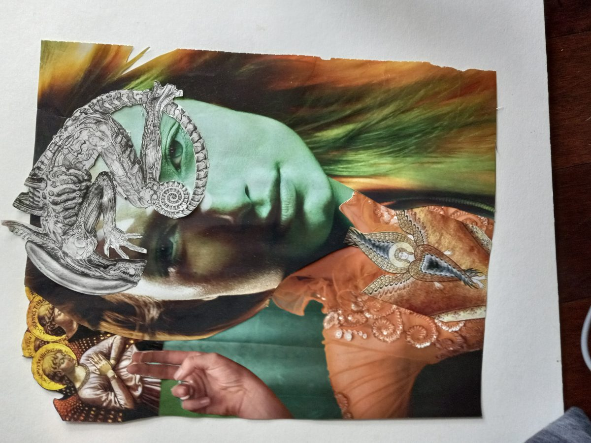

Mon26Oct

Session 3
Collage workshop
 ▶ series video, playing muted · sound
▶ series video, playing muted · soundAbout the series
A weekly online hour for people who love art and might be hesitant to engage creating, or are looking for new forms.
One hour, one work, one host. Every week an IFAC artist or dealer opens a single piece or practice and talks about how they see it. No background needed. Questions welcome.

 JHosted by Kevin Meadows, Eric Brummel, Jason Ford and others
JHosted by Kevin Meadows, Eric Brummel, Jason Ford and othersThe general card. Cover, About, schedule, hosts and Subscribe belong to the series. Signed in, the sign-in block is replaced by "Subscribed ✓" or nothing. "I'm coming" is per session, so it lives on the next-session band and the session pages, not here.
Sessions

Collage workshop
To be announced
Rows do not expand. Each row is a link to the session's own page (write-up, materials, conversation). That removes the repeat of this week's write-up that the page has now.
Who's hosting
Unchanged from today.